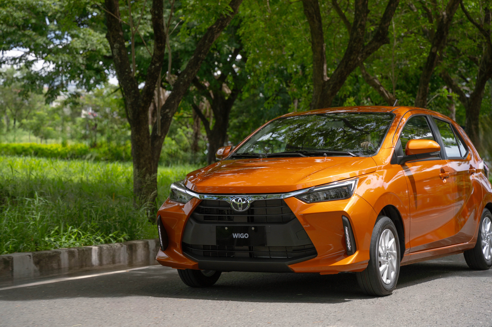

Compare Toyota's most popular vehicles and discover which model best fits your lifestyle, budget, and long-term ownership goals.
Buying your first vehicle is one of the biggest financial decisions you'll make. While every Toyota is known for reliability and excellent resale value, choosing the right model depends on your lifestyle, daily driving habits, passenger needs, and long-term budget. This guide compares four of Toyota's most popular models to help you make a confident and informed decision.

Best For: Students | Young Professionals | First-Time Car Owners | Daily City Driving
If affordability and practicality are your top priorities, the Toyota Wigo is an excellent first vehicle. Its compact dimensions make parking easy, while its fuel-efficient engine helps reduce everyday operating costs.
Despite being Toyota's most affordable model, the Wigo offers modern styling, essential safety features, and the reliability Toyota is known for. It's an ideal choice for new drivers who want a dependable car without stretching their budget.